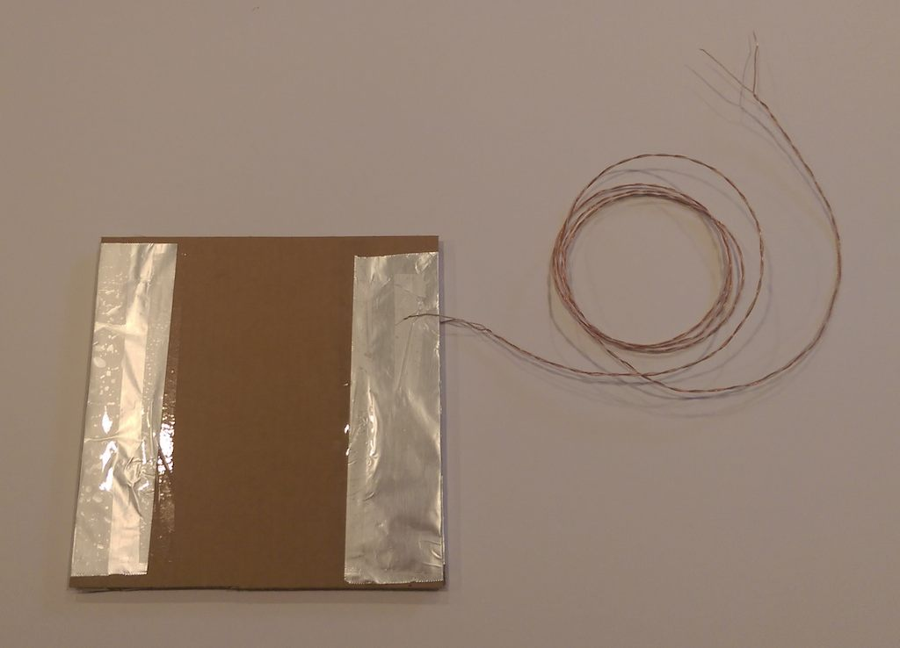

This project uses the same code as Better Piano, but instead of using buttons attached to the RaspberrySTEM to play the notes, we are creating our own walkable piano keys that will play sounds when you walk on them.
The only code changes that are required are if you want to add additional keys over and above the four that have already been wired.
Parts Required:
(2) 8" cardboard squares
(2) 1x8" cardboard strips
(2) 8x12" foil rectangles
6ft wire pair (stripped)
Tape
Step #1: Place cardboard centered on tin foil
Step #2: Fold and Tape Foil on One Side:

Step #3: Fold and tape foil on other side. Repeat and make another foil/cardboard square

Step #4: Flip one cardboard/foil square over

Step #5: Tape cardboard strip on one side

Step #6: Tape cardboard strip on other side

Step #7: Attach other cardboard/foil square to top, with tape.

Step #8: Tape wire to one side of pressure pad

Step #9: Tape other wire to other side of pressure pad

Pressure Pad is complete

Step #10: Attach pad in parallel with button on breadboard

Final circuit: